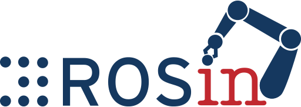

ACTROS – Center for Advanced Training on Robotics and Open Source
- Full title
- Center for Advanced Training on Robotics and Open Source (ACT-ROS)
- Type
- ROSIN Educational Project
- Funding
- ROSIN – European Union’s Horizon 2020 research and innovation programme, grant agreement No 732287
- Duration
- 1 January 2020 – 31 December 2020
- PI
- Francisco Martín Rico
- Links
- Project website · GitHub
About the project
ACTROS created a reference centre for training in mobile robotics with open source, mainly ROS and ROS 2, at Universidad Rey Juan Carlos. URJC is a national reference in ROS training, with university courses since 2015 and the pioneering Degree in Software Robotics Engineering.
The project equipped the lab robots (Pepper, TIAGo, Kobuki…) to run regular courses for advanced students and for professionals who want to learn robot software development. The training covers ROS, ROS 2, navigation, sensors and deep learning for robots.
Course materials
- actros2_essentials – packages used in the ROS 2 courses.
- actros_essentials – packages used in the ROS courses.

ACTROS was funded as an Educational Project by ROSIN – ROS-Industrial Quality-Assured Robot Software Components. ROSIN has received funding from the European Union’s Horizon 2020 research and innovation programme under grant agreement No 732287.